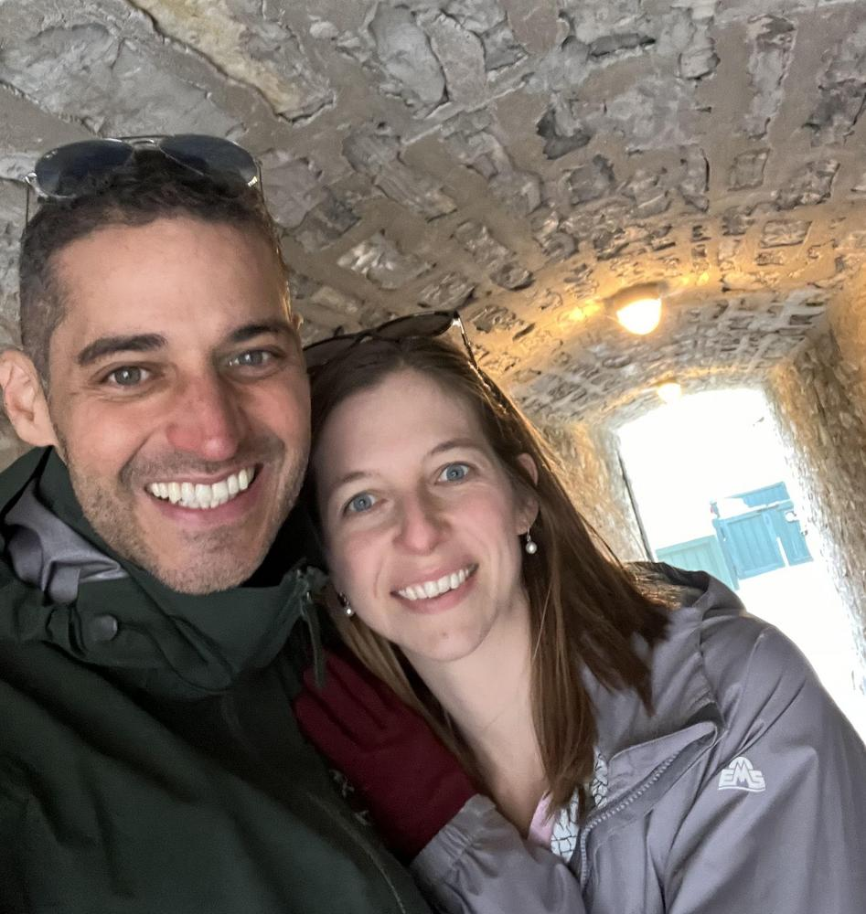
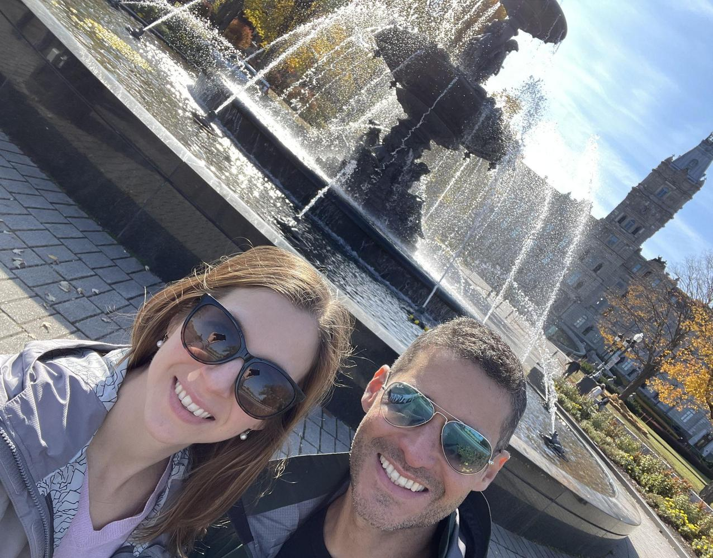
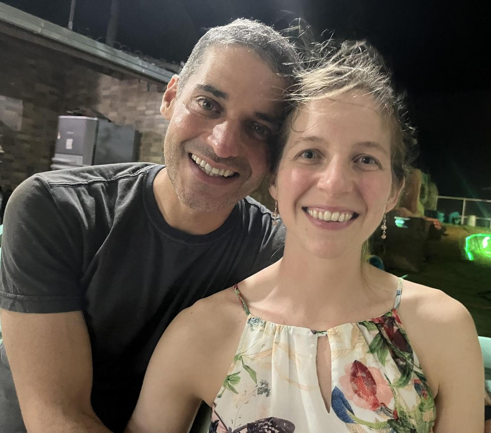
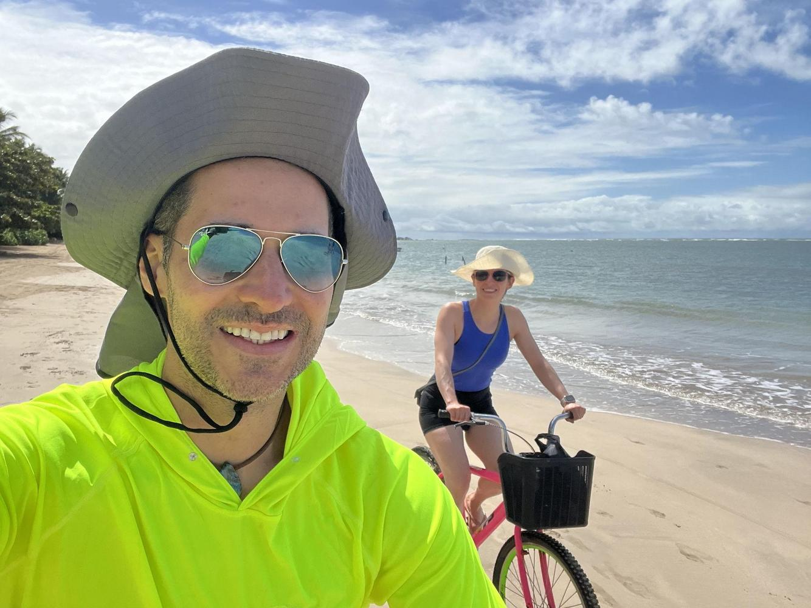
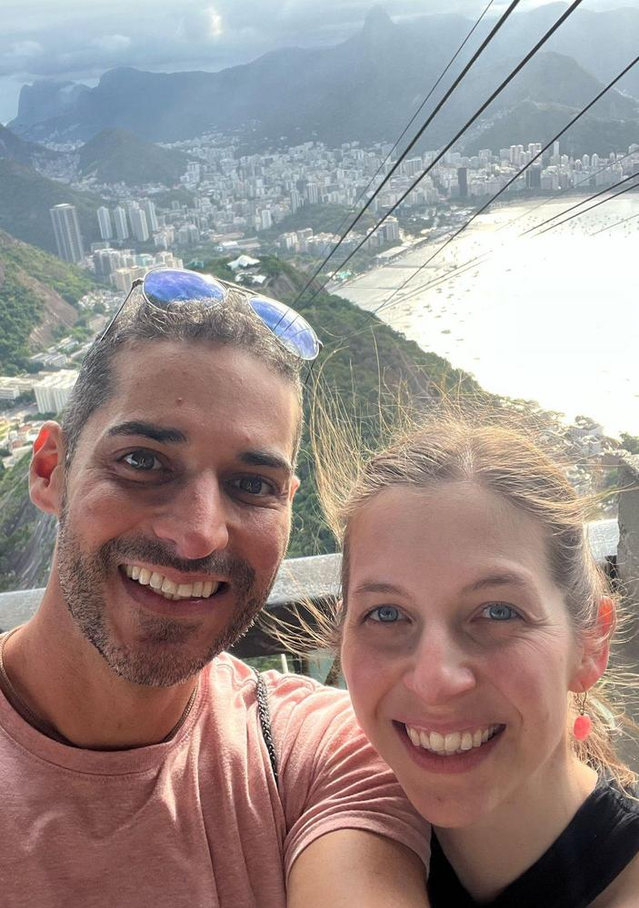
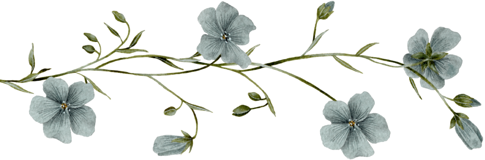
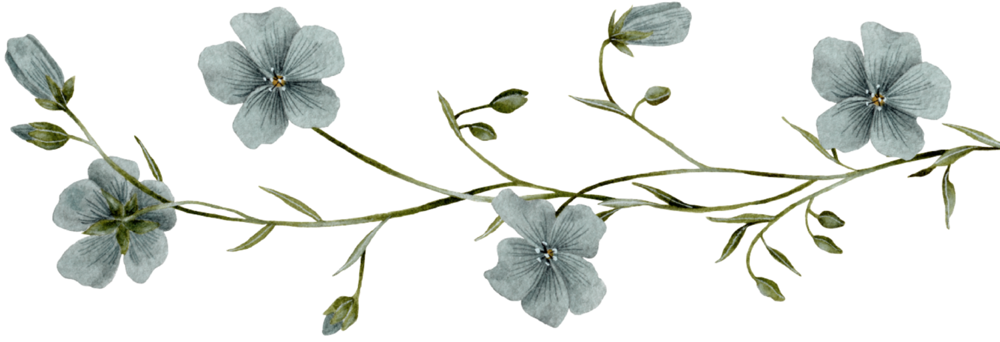

Andre and Helen met online and had their first date at the Thai House of Holden. Andre arrived early and ordered a beer, and he was happy to see that Helen liked beer too, because she also ordered one when she saw that he was having one. Helen was happy that, despite Andre's profile saying he was a healthy eater, he was already there with a beer. She ordered Green Curry and he ordered Pad Thai, but her dish was much better than his!
They had their second date at Wachusett Mountain, where they hiked a trail to the summit, stopped at the mountainside café for a beer, and had dinner at a local restaurant. Upon arriving at dinner, Helen realized she had left her purse at the café! The new couple drove back, and Andre, being quite the gentleman, went to retrieve her purse from the back of the chair she had left it on. Andre enjoyed seeing that Helen was just as "geeky" as him: they were both scientists and had very specific, methodical ways of doing things. Helen had initially thought Andre was too "cool" for her, but soon learned he was a fellow weirdo too. They clicked over their "weirdness"!
Andre got Helen hooked on rock climbing, and since she had done bouldering in the past, they started climbing twice a week. They liked to cook together and had many dates cooking dinner after rock climbing.
In December 2024, Andre traveled to Brazil to visit his parents and ran into problems renewing his visa — he was placed in Administrative Processing for further examination by the US Consulate — so he ended up stranded in Brazil. Andre and Helen started having Zoom calls every day, during breakfast and after dinner, talking about their days, plans, and dreams. Helen traveled from Massachusetts to visit him every few months, and they had lots of opportunities to explore different places in Brazil and even Canada, discovering new things together and giving Andre a chance to show Helen his hometown. They talked for hours before sleeping and felt very close to each other, counting the days until the next trip that would bring them physically together again.
In one of their Zoom calls, Andre and Helen talked about marriage, and decided to order their rings so that Andre could propose to her the next time they met in Brazil! As they were strolling along a deserted beach in Bahia, Andre asked Helen to marry him — and was overjoyed to hear "yes"!
Eventually, around March 2026, Andre received an email from the US Consulate requesting his passport to stamp his renewed work visa, and Andre and Helen were over the moon! His return to the US would also mean he could finalize his Green Card application, which had been on hold since he was not on US soil to submit his final documents.
Being together is such a joy for Andre and Helen; they are like-minded in many aspects and enjoy every minute together. Andre and Helen are open to accepting each other, their flaws and mistakes, and have a blast discovering the world together!
